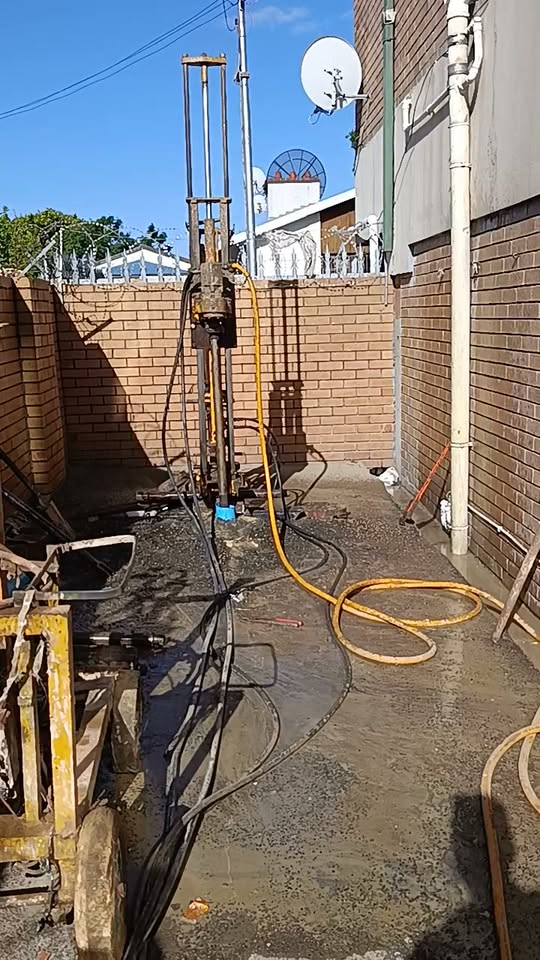

Boreholes drilled with a compact rig that fits small yards and narrow side passages. Most Cape Town homes have room.
[Starting price: confirm with Richard]
A lot of Cape Town homeowners assume their yard is too small for a borehole. Our rig is compact. It's towed in on a trailer and set up in back gardens, driveways and side passages barely wider than a door. The photos on this site are our own jobs, in yards like yours.
A borehole is drilled down into the rock below the sand, so it reaches deeper, steadier water than a wellpoint. It's the right choice when you want water for more than the garden, or when a wellpoint on your property runs dry in summer.
Probably. Our rig is compact and we regularly drill in side passages and small back gardens. Send us a WhatsApp photo of the spot and we'll tell you straight away.
It depends mostly on depth and on what you add on top: pump, tank, filtration. [Richard to confirm a starting price.] We quote before we drill.
Yes. The City of Cape Town requires boreholes and wellpoints to be registered with the City, and to display the official sign when the water is used outdoors.
Send us a WhatsApp with a photo of your yard. We'll tell you if a borehole or wellpoint fits, and what it costs.